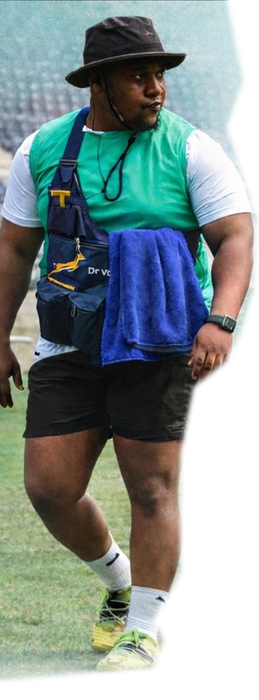
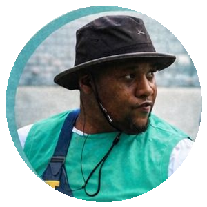

Elite Sports &
Exercise Medicine.
Concussion Management. Injury Rehabilitation. Performance Optimization. Comprehensive GP Care. Evidence-based medical care for elite athletes, rugby competitors, and everyday movers in East London.

Comprehensive Medical Solutions
Directly from pitchside trauma care to full-family diagnostics. Every treatment protocol combines the precision of elite sports science with compassionate primary care.
Concussion Assessment & Management
Standardized SCAT5 baseline testing, post-impact cognitive evaluation, vestibular screening, and supervised return-to-sport clearance.
Diagnosis & Treatment of Sports Injuries
Acute joint sprains, ligament tears, muscle rupture management, tendon rehabilitation, and kinetic chain biomechanics.
Exercise Prescription Advice
Prescribing movement as medicine. Dose-response exercise plans for hypertension, metabolic health, type 2 diabetes, and longevity.
Physical Health & Performance Optimisation
Physiological testing, VO2 pacing, heart-rate variability recovery, endurance coaching, and athletic fueling strategies.
Family Medicine Comprehensive Care
Primary medical care for all ages — from common viral infections and pediatric care to weight loss solutions and chronic disease.
General Check-ups & Vital Screenings
Blood pressure monitoring, cholesterol lipid profiling, resting ECG, glucose screenings, and proactive cardiovascular assessments.
Laboratory Testing (Blood Work)
Fast and accurate on-site diagnostics. Monitoring inflammatory markers, hormones, iron, and metabolic panels to optimize wellbeing.
Family Planning & Contraception
Personalized advice with regards to birth control options, reproductive counseling, and athletic cycle management.
Movement is Medicine.
“Whether you are returning from a concussion, managing a chronic condition, or optimizing your athletic performance, we provide evidence-based, personalized care.”
Graduated Return-to-Play Protocol (GRTP)
World Rugby & Consensus Statement on Concussion in SportStage 1: Symptom-Limited Activity
Initial 24–48 hours of physical and mental rest. Daily living activities that do not provoke concussion symptoms (headache, dizziness, photophobia).

& Pitchside Care
Dr. Ingar Gxolo
Dr. Ingar Gxolo is a medical doctor with a dedicated special interest in Sports & Exercise Medicine. Having earned his MBChB from the prestigious University of the Free State (UFS), Dr. Gxolo combines on-field trauma readiness with high-precision clinical diagnostics.
Frequently seen on the sidelines of high-stakes rugby tournaments, his pitchside experience managing acute concussions, soft-tissue tears, and return-to-play transitions brings high-performance athletic care to every patient in East London.
Get in Touch with Dr. Gxolo
Whether you have sustained an on-field sports injury, require a formal concussion evaluation, or need holistic family medical care, connect directly with our practice.
Book a Consultation
Reserve priority pre-launch consultation with Dr. Ingar Gxolo.
Consultation Requested!
Booking Ref: #GX-8421Thank you, Patient. Your inquiry for Sports Medicine has been queued with Dr. Ingar Gxolo's clinic.